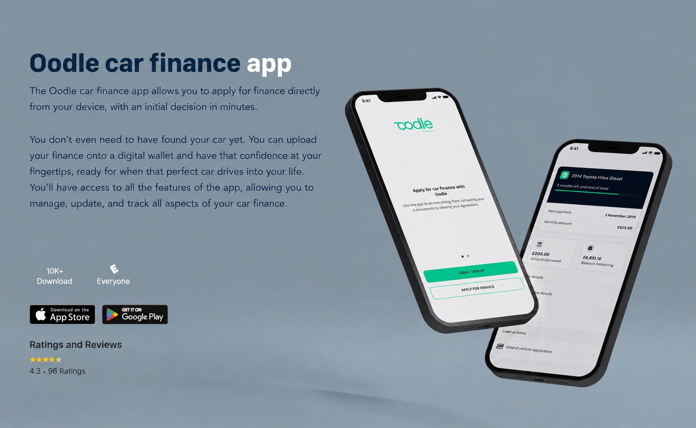
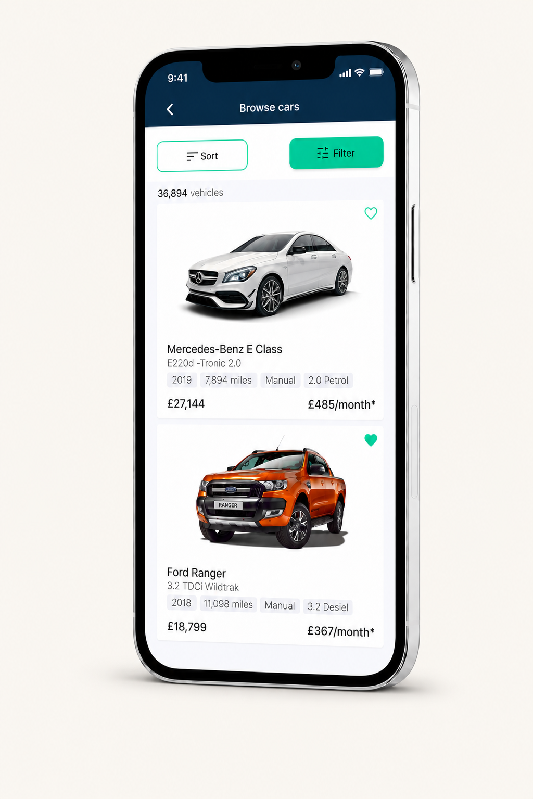
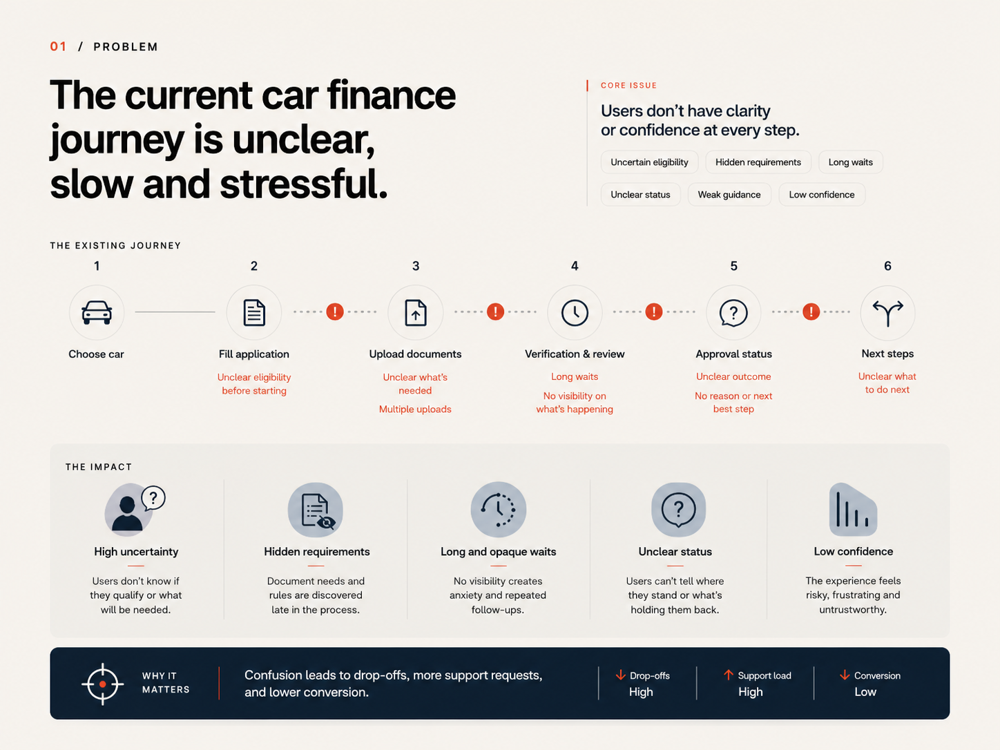
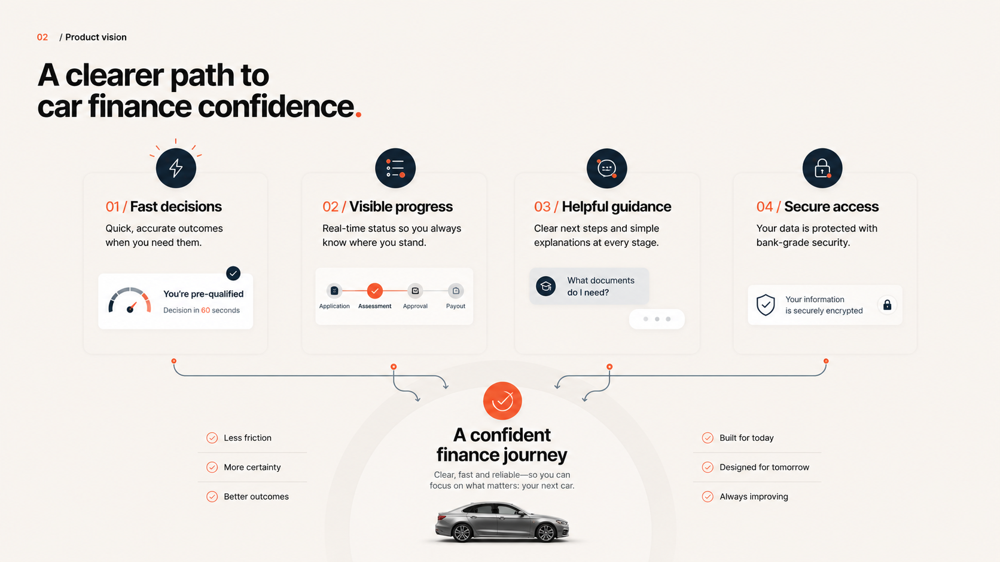
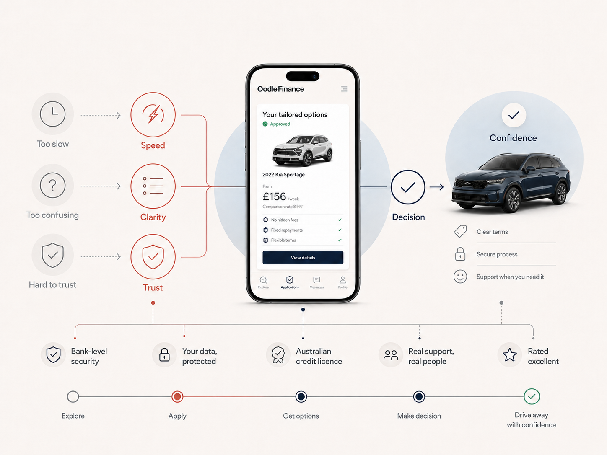
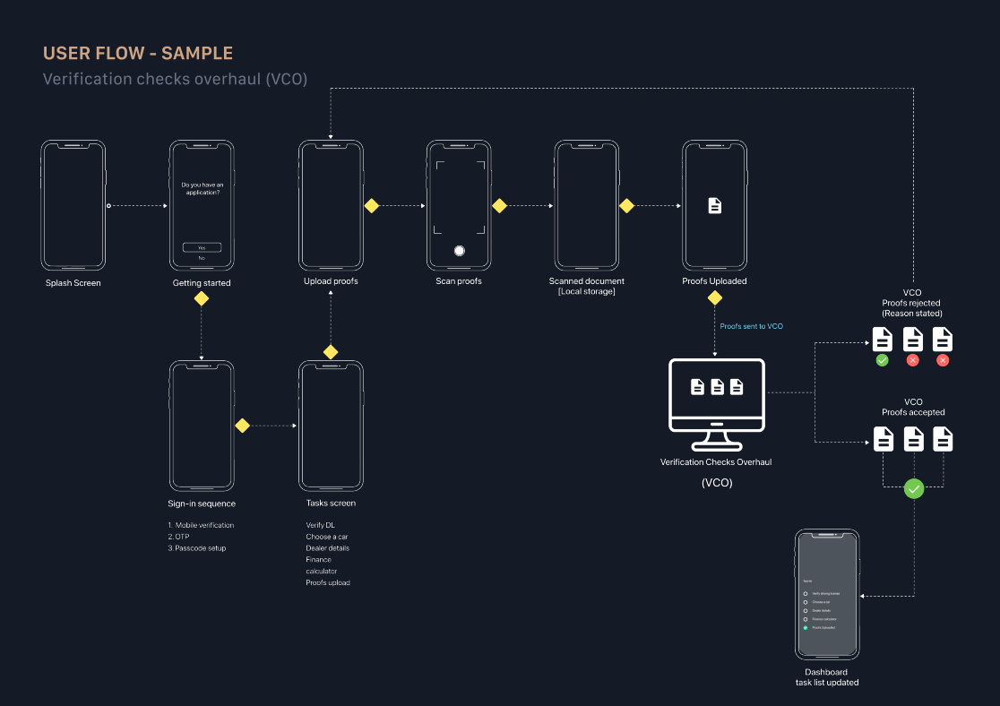
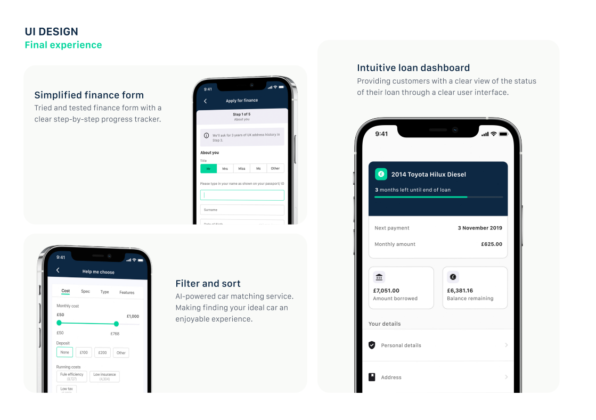
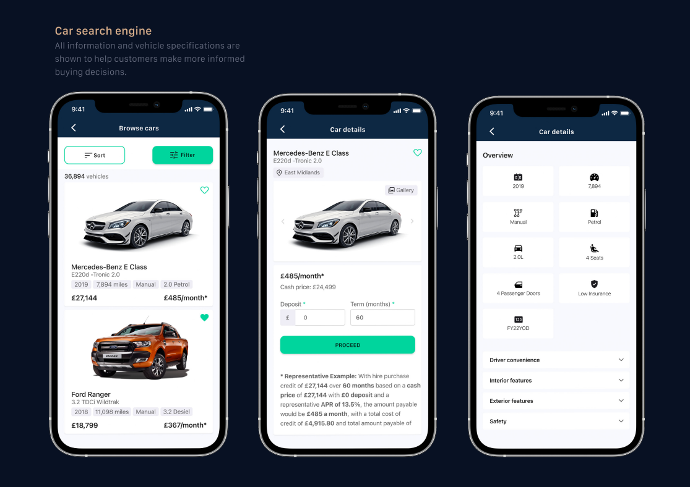
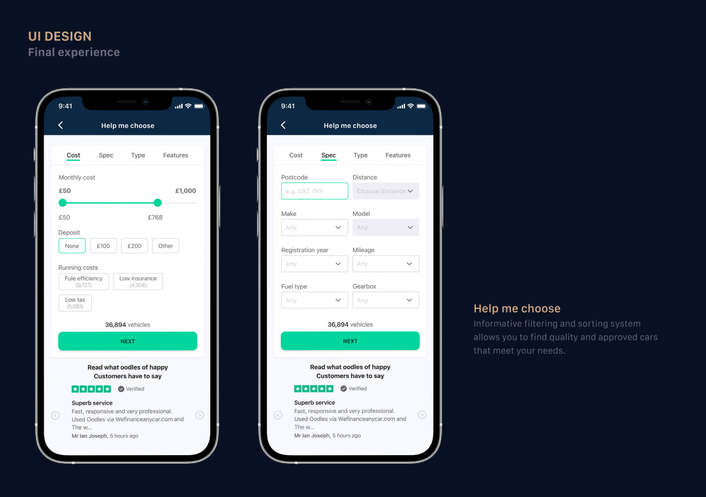
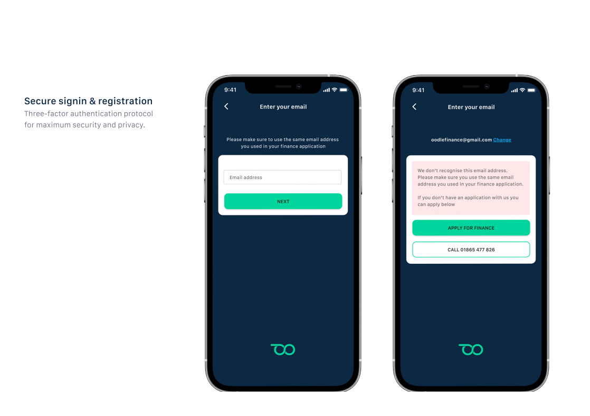

Instant decision
Fast automated personalised finance quotes and budget feedback in seconds rather than hours or days.
Mobile finance · Application journey 信頼と流れ

A mobile product case study focused on clarity, trust and progression in a finance journey where users need to understand status, next steps and decisions.
Case study narrative
The strongest version of this case study is not a gallery of app screens. It is a product story about reducing uncertainty in a high-trust finance journey: helping customers search, apply, verify details, understand status and manage their loan with confidence.

01 / Problem
Buyers had lost confidence in used-car purchasing, and finance often appeared as the final, stressful piece of the car-buying puzzle.
The challenge was to make searching for and financing a car feel seamless and frictionless, while still respecting the seriousness of a financial decision.

02 / Product vision
The product vision focused on four capabilities that could move the experience from a slow finance process to a clearer mobile journey.
Fast automated personalised finance quotes and budget feedback in seconds rather than hours or days.
In-app ID verification and acceptance to reduce uncertainty in the application journey.
Document scanning and upload support to make evidence submission feel more direct.
Search that surfaces quality checked, approved vehicles rather than overwhelming the user.

03 / Research
Research focused on the existing Oodle finance application form, with the goal of understanding the current flow and identifying where users became uncertain or confused.

04 / User flow
The verification checks overhaul is the strongest systems-thinking artefact in the case study. It maps the journey from splash screen and sign-in through proof upload, scan proof, verification checks and dashboard task updates.

05 / UI design
The final UI work focused on a simplified finance form, an intuitive loan dashboard and clearer filter-and-sort patterns. The design intent was to make progress, status and next actions easier to understand.
A step-by-step progress structure made the application feel easier to complete.
A clear account view helped customers understand loan status, next payment and key details.
Filtering and matching helped users narrow the market without feeling overloaded.

06 / Car search
The car search engine presented vehicle information and specifications so customers could make more informed buying decisions.
Browse, car details and overview screens helped turn a complex market into a more structured comparison experience.

07 / Help me choose
The Help me choose flow used filtering and sorting to help users find cars that matched their needs, with cost, specification, type and feature controls.

08 / Secure access
Secure sign-in and registration were part of the product experience, not a separate edge case. In a finance context, account access needs to feel safe, understandable and recoverable.
The secure access screens supported email verification, application lookup and clear recovery actions for users who could not be recognised.

09 / Takeaway
The value of the work was not only polished mobile UI. It was reducing uncertainty across a high-trust journey by helping users understand what is happening, what is required and what comes next.